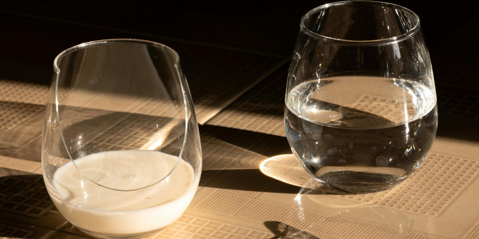

O que é o Whey Protein?
O whey protein é uma proteína derivada do soro do leite, que é o líquido que sobra após a coagulação do leite durante o processo de fabricação de queijo. Este líquido é rico em proteínas de alta qualidade e é filtrado para remover a maior parte das gorduras e carboidratos. O whey protein é conhecido por ser uma fonte de proteína completa, contendo todos os aminoácidos essenciais que o corpo não pode produzir sozinho.
TIPOS DE WHEY
Existem três tipos principais de whey protein, cada um com suas características específicas:
- Concentrado de Whey Protein: Contém entre 70% e 80% de proteína, com o restante composto por carboidratos e gorduras. É a forma mais comum e menos processada, oferecendo um bom equilíbrio entre proteína e outros nutrientes.
- Isolado de Whey Protein: Contém 90% ou mais de proteína e é mais baixo em carboidratos e gorduras. O teor de lactose também é reduzido. Ideal para pessoas que buscam uma proteína de alta pureza e têm intolerância à lactose.
- Hidrolisado de Whey Protein: É parcialmente pré-digerido, o que facilita a digestão e a absorção.
Intolerântes à lactose podem tomar whey?
Individuos que possuem intolerância à lactose podem optar por whey isolado ou hidrolisado. Atualmente, é possível encontrar no mercado whey protein feito a partir de proteínas vegetais, como as de ervilha e arroz. Esses produtos não contêm lactose, o que os torna uma alternativa adequada para pessoas com intolerância à lactose ou que seguem uma alimentação vegetariana/vegana. Além disso, esses whey proteins vegetais são formulados para serem seguros e saudáveis. No vídeo abaixo, você pode conferir o processo de fabricação do whey, do processo de fabricação até chegar em casa.
Whey faz mal?
Já ouviu falar que whey causa espinhas ou te deixa com dor de barriga? O whey nada mais é do que a proteína derivada do soro do leite, não contém riscos para sua saúde, é apenas uma maneira mais fácil de atingir a meta proteica diária. Individuos que treinam e possuem uma rotina de musculação, optam por tomar whey para atinjir a meta proteica. Whey só pode fazer mal se o indíviduo apresenta alguma restrição relacionada à algum ingrediente composto no mesmo, fora isso, é apenas uma proteína vinda do leite.
Nem todos necessitam utilizar whey protein, pois é possível que você consiga atingir suas metas proteicas exclusivamente por meio da alimentação, tornando o uso do suplemento desnecessário. Portanto, é fundamental consultar um nutricionista para uma avaliação adequada da necessidade de incorporar este suplemento à sua dieta.
Água ou leite?
Essa escolha varia de pessoa para pessoa. Alguns preferem diluir o whey protein em leite, o que pode aumentar ainda mais o aporte proteico. Por outro lado, utilizar água tende a ser uma opção mais prática e não adiciona calorias extras. Portanto, essa decisão deve ser orientada pelos gostos pessoais e pelos objetivos individuais.
Além disso, é relevante destacar que não é necessário consumir whey protein da mesma maneira todos os dias. Existem diversas formas de incorporá-lo à sua dieta, como em receitas e preparações culinárias, o que pode tornar o uso do suplemento mais variado e interessante. Essa abordagem não só permite diversificar a forma como você ingere a proteína, mas também pode contribuir para a sua adesão a uma alimentação equilibrada e prazerosa. No entanto, abordaremos essas opções e sugestões de receitas em um futuro artigo no blog.